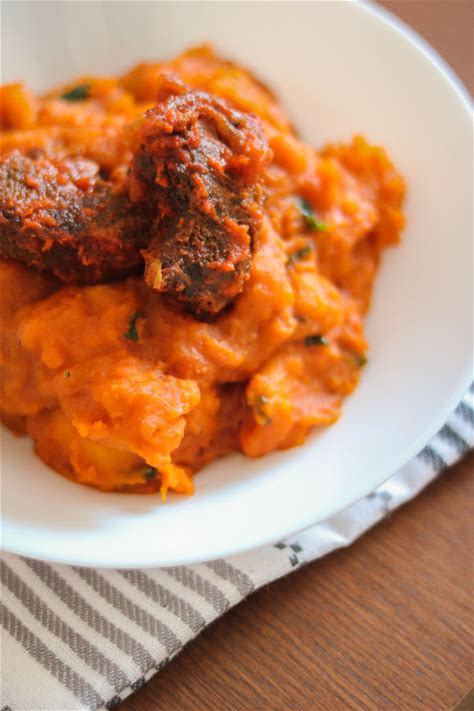

Tasty Yam Porridge Recipe
Yam porridge also called Asaro is a delicious, tasty Nigerian dishmade by cooking yam in flavourful spicy sauce. It's a nutritious, warm and, comforting meal that settles the soul.
Recipe Details
- Prep time: 15 minutes
- Cooking time: 45 minutes to an hour
- Serving:7 people
- Difficulty:Medium
Ingredients
- 1 tuber of yam peeled and cut (any shape desired)
- Half plate of blended pepper
- 2 onions peeled and sliced
- Half bottle of palm oil
- Salt and 3 seasoning cubes for taste
- Crayfish (optional)
- Titus fish (optional)
- Pomo (cow skin also optional)
- Ugwu or scent leaves
Instructions
- Peel and cut the yaminto medium sized cubes depending on shape choosen.
- Wash and pour the yam into a pot and add water.
- Let it boil for some minutes till soft and mash some of the yam when soft to thicken the porridge
- Add the blended pepper and sliced onions.
- Add the palm oil, salt and seasoning cubes.
- Add the crayfish and titus fish then stir gently.
- Lastly add the chopped ugwu and let it simmer for 3 minutes more.

Tips
You can add any other smoked or dry fish for enhanced flavour
Nutrition Facts per serving approximated
- Carbohydrates: 40 grams
- Calories: 200
- Protein: 4 grams
- Fat: 5 grams